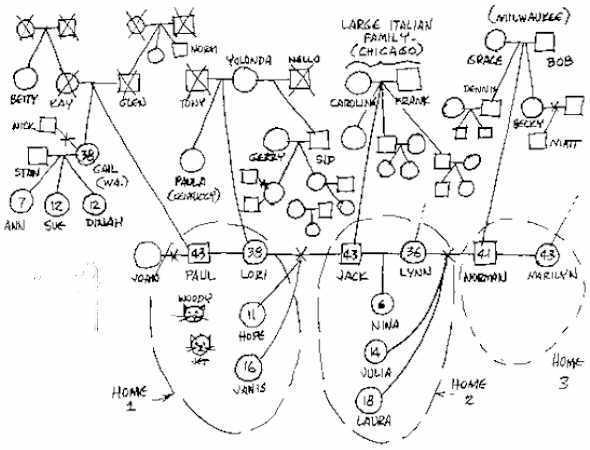

|
|
|
- evolve a high-nurturance stepfamily |
Make a Family
Map (Genogram)
to See Who You All
Are
By Peter K.
Gerlach, MSW
Member,
NSRC Experts Council
|
 |

 The
Web address of this article is http://sfhelp.org/sf/geno.htm The
Web address of this article is http://sfhelp.org/sf/geno.htm
Updated
05-10-2015
Clicking underlined links here will open a
new window. Other links
open an informational popup,
so please turn off your
browser's popup blocker or allow popups from this nonprofit Web site.
If your playback device doesn't support Javascript, the popups may not display.
Follow underlined links after
finishing this article to avoid getting lost.
This is one of a series of lesson-7 articles
on how to evolve a
stepfamily. The "/" in re/marriage and re/divorce
notes that it may be a stepparent's first union. "Co-parents" means both
bioparents, or any of the
related stepparents and bioparents co-managing a multi-home nuclear
stepfamily.
This article explains what family "genograms" are, how to make one,
and how to use it. The article assumes you're familiar with...
 Family
Maps:
a Powerful Tool Family
Maps:
a Powerful Tool
A
family map or genogram
graphically shows all the living and dead people who genetically, emotionally,
and legally comprise a
family. It may include three or more generations of family members, and shows where
each person "fits" in the group.
Family
maps can be specially
helpful for new stepfamily members who wonder "Who are we all?"
Genograms
and
are useful visual tools to help understand and manage your related
stepfamily
homes.
Here's a partial
genogram of a real six-co-parent, three-co-parenting-home stepfamily. There are over 60 people here
- about half of all the members (!). Refer to this as you read what follows.

How
to Map Your Family
Tho
this article focuses on stepfamilies, genograms can be just as useful for
managing
families and intact biofamilies.
 Suggestions Suggestions
-
Have each of your co-parents
draw their own map
of at least three generations, including all genetically, financially, or
psychologically influential dead people. You’ll discover more if you
don’t
draw your maps together! Then...
-
Explain the map-making purpose and steps to your
minor and grown kids and invite them to draw their own diagrams
(alone). Options - suggest young kids use stick figures and/or
cartoon faces to do this.
-
You can do this exercise at any time while your complex stepfamily
progresses over many years.
Family maps can be specially useful around
major family-change events like weddings,
births, graduations, separations and divorces, home-leavings, job or
location changes, adoptions, retirements, and deaths.
Prepare
You’re goal is to identify all the people who comprise the
web of genetic and emotionally-important relationships that currently form
your whole multi-home, multi-generational stepfamily. Restated -you
seek to discover "Who comprises our whole stepfamily now?"
Check your initial attitude.
Be open-minded, curious, and give yourself permission to believe
"there’s no right or wrong" in anyone’s map. Everyone has a right to
their own opinion and definitions.
Expect your members’
maps to disagree - that’s normal.
Discovering such
values conflicts promotes
admitting and resolving important stepfamily
conflicts, and strengthening your multi-home bonds,
loyalties, and
over time.
Use a BIG piece of paper -
e.g. at least two
8.5" x 11" sheets taped together. These diagrams get very complicated!
Take your time! Expect evolving your
family diagram to take an hour
or more - perhaps over several sittings. The more undistracted focus and attention you
invest in creating your map, the more you’ll learn.
Consider journaling about your map-making process.
The
thoughts and emotions that bloom while you’re making this map and discussing
it with others are just as valuable as the diagram.
The map itself is not the
objective here. The real payoffs are what you all feel and learn as you
draw and talk about your stepfamily!
To avoid having to re/draw or cramp
your map,
create it in three
stages:
-
Living and dead co-parents
(bioparents and stepparents), then...
-
minor and grown kids, then...
-
bio and step relatives, and
other important people.
Refer to the sample map above
as you read about these stages.
Lay your paper long-side horizontal.
Start in the center, about 1/3rd from the bottom edge.
Use to lightly
sketch in this first three-generational draft. Novice mappers often find
that their first diagrams are too cramped, and they have to start over to make
more room for everyone.
Draw a ~3/4" circle
(female) or square (male) for you, and a short horizontal solid (if married)
or dashed line
(if not married) to another
square or circle for your current partner. Put your current ages inside the symbols, and next to
them note your names.
Next, on the same level add horizontal solid
lines from your symbols to new squares and circles for each of your co-parenting ex
mates (your stepkids' other bioparents), whether alive or dead. If
you’ve been married several times or had children with several partners,
draw in each
of your kids' other bioparents. Add their names and current ages.
If you’re divorced or widowed without
biokids, only include your ex if they, or any of their relatives, have
"significant" emotional, legal, or financial meaning to you
and/or any of your kids now.
If you divorced, "X" the middle of the line connecting your symbol to
your ex's. That doesn't mean you have no relationship - specially of you
have biokids.
If your former partner died, draw
an "X" through their symbol. Include her or his age at death.
If any co-parenting ex mate is seriously
dating, cohabiting, or has re/married, add horizontal lines from that ex-mate’s
symbol to a circle or square for their current partner. If they’ve re/divorced
and their ex has emotional importance to any child of yours or your
partner’s, include that adult’s symbol, and anyone related to them who’s
still emotionally important to your child (or to you).
You’ve just drawn
the co-parents’ row
of your genogram. Next...
Draw a ~3/4"
square or circle for each living biochild, about 2" or 3" below their custodial
bioparent’s symbol. If they're adults, Include symbols and connector lines for
any past or present mates and any biological, adopted, or foster kids. For
the latter, add symbols and dashed connector lines for their bioparents -
even if you don't know them.
Now connect each biochild’s symbol
with a solid vertical or slanted line to the horizontal line between their bioparents.
Put the kids' current
age inside their circle or square, and note their first name, and/or nickname.
Add
their last name, because steppeople in the same home can have different last
names.
Next, add a symbol under the appropriate
bioparent/s for each dead and/or absent (e.g. adopted, aborted, miscarried, stillborn, or killed)
child. If such a child is
by
all
living genetic relatives, draw their symbol with dashed lines, with a slash
or "X." If you feel they’re
well grieved yet, make their symbol-lines solid.
here is about
"good grief."
If
the child is dead, put a slash or "X" through their circle or square, and
write in their age at death. If the gender of an aborted child wasn’t known,
use a diamond symbol. If you haven’t included a symbol for each child's
other bioparent, add one for them now on or near the horizontal co-parenting
row.
Draw separate symbols for both of their birth
(bio)parents, even if they aren’t currently known or actively co-parenting.
They’re surely of major genetic, ancestral, and psychological importance to their child, even if the
importance is repressed or denied. Double check: look at each adult on
your co-parenting row (including each co-parenting ex-mate’s new or recent partner/s), and
ask "have we included each known living and dead child of theirs?"
You’ve just added
the "children’s row" to your
genogram. Note your feelings and any thoughts and questions, and write them
down for later reflection.
Add Biological and Step Relatives, and
Significant Others
Draw
circle/square symbols about 6-8" above your own symbol, representing your
biomother and biofather. Connect these symbols with a solid horizontal line
if they were married, or a dashed line if they weren’t. If they divorced or
separated, note that with an "X" or " // " on this connector line If either is dead, put an "X" through their symbol.
Add your bioparent’s ages now or at death, and any
nicknames they were/are known by. If either of your bioparents
re/married or had a child with another partner, draw symbols and solid or dashed
connector-lines for each of those adult partners and children. Add their names and ages
to your diagram, and any other info you feel is relevant.
Below the horizontal connector-line linking your
bioparents’ symbols, draw down slanted solid lines to new circles and squares for
each of your living and dead genetic siblings. Locate them
about 1/3rd of the way between the
grandparents’ row and your co-parents
row.
If these sibs are or were married, add symbols and horizontal connector lines for
each of their past and present partners, and slanted lines down to symbols
for each living and dead child of theirs. These are your kids’ aunts,
uncles, and cousins and your stepkids’ steprelatives. Add full names and
nicknames, ages, and any other relevant information like major illnesses, disabilities,
addictions, "in college," "state track champ,"
"Peace Corps," or "in the Army."
Repeat
this multi-level "ancestor" step of your genogram for each of your two or
more other co-parents,
one at a time. Stay focused on your goal here, for this can feel tedious and
overwhelming:
To guard against overlooking a
family member,
stand in the imaginary shoes of each co-parent, and ask yourself "Honestly,
who do I count as my genetic and psychological family now - even living and dead relatives I
‘hate’ or have ‘no relation’ with?"
Add names, ages, and any
other relevant information. Include any fourth-generation people like great-grandmothers
or great-uncles, of high significance to any of your
co-parents
or minor or grown children, whether living or dead. They count!
|
Final
check: one at a time, slip into the skin, mind, and heart of each minor
and grown
child. Ask "Is everyone I have strong feelings about on this map
now?" If any adults or kids are missing to any child - even if you
don’t feel they belong - add symbols and connector lines for them now. |
If you’re satisfied that
everyone who
has a significant impact on each adult and child in your multi-generational
stepfamily is included now, darken the lines of all symbols and connector lines with a pen or
soft pencil. Your stepfamily map is done.
Options
As a finishing
touch, use different colored pens or markers to circle, asterisk, or note:
-
adults and kids you feel have
significant false-self
-
the
of each home in your stepfamily (Low >
Moderate > High)
-
stepfamily members whom
you don't accept but others do (or vice versa);
-
adults and/or kids who aren’t
accepted by other stepfamily
members;
-
strong
antagonisms (use zigzag lines "wwww" to connect their symbols) or
favoritisms and
alliances (use double-parallel ====== connector lines) between
pairs of
members;
-
kids and adults who don’t
want to be included in
your stepfamily
now;
-
members who deny or don’t realize that you all form a normal multi-home, multi-generational
now;
-
adults and
kids who may not have fully
the losses
(broken bonds) from prior family reorganization from divorces and/or
deaths;
-
major
and/or relationship
between three or more members
-
any adults or kids whom you feel are currently addicted; and …
-
who
leads (a) each member's home and (b) this whole multi-home,
multi-generational
family now.
-
(add your own item/s)
Using
Your Genogram
"Who comprises our family
now?"
"What does the term 'family' mean to me/us
now?"
"What are the key differences between our stepfamily map and our
biofamily maps? What do those differences
to us?" Avoid manipulating or demanding family members to include or exclude people, and be alert for
significant
and
loyalty
conflicts and relationship triangles.
"How likely is it that we
all will ever feel like a
unified multi-home stepfamily?"
"What would have to happen to promote
that? Who "should" make that happen?"
"What if that never happens?"
"Do our members disagree
significantly on who belongs to our stepfamily? If so,
how does that affect me/ you/us?"
"What - specifically - do I need to learn from
and/or tell my partner
now about what this stepfamily map
means?"
"Is there any child or adult stepfamily member I feel uneasy
about showing this map to, or asking to draw their own? Am I reluctant to compare and
discuss our genograms with anyone? Is my partner?
"How did I feel creating this genogram? How did
each other co-creator? What does that mean?"
Option: use your map as input for discussing your
stepfamily
identity.
 Feedback please - take this anonymous
Feedback please - take this anonymous
 Refocus
on the big picture -
studying,
discussing, and applying
together. Refocus
on the big picture -
studying,
discussing, and applying
together.
Recap
This article describes how to make and use a powerful graphic
tool to help adults understand and manage a complex multi-home
divorcing-family or stepfamily. It can be specially useful in promoting
constructive discussion among family members who are visual learners.
Genograms or family maps can also help members...
-
clarify who
to their family, and spot and resolve significant conflicts over
this;
-
spot and resolve
significant family-identity confusions or conflicts;
-
effectively manage
their complex
of several multi-generational biofamilies over
time;
-
make the best use of any
professional human-service helpers you hire.
Making and discussing a family genogram is best done by two or more
related co-parents (a) after marital separation; and (b) during serious
pre-commitment courtship. Genograms are also useful for anyone who wants
to understand their childhood and/or current family better.
An excellent resource for
diagramming your family tree is
GenoPro
- a software tool and instructive Web site. Also note another powerful visual tool - family
structural maps.
Pause, breathe, and reflect:
recall why you read this article. Did you get what you needed? If not,
what
you need? Who's answering these questions - your wise, resident
or
 Keep working on Lesson 7!
Keep working on Lesson 7!
 Prior page
Prior page
site
intro /
course outline /
site search /
definitions / chat
/ contact
|